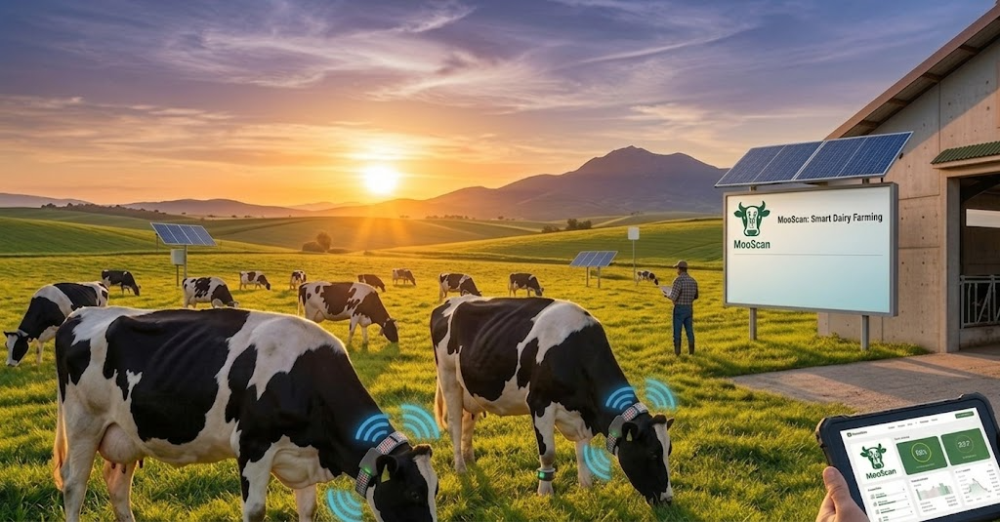

MooScan is a real-time IoT & AI monitoring system that detects mastitis early, protects milk quality, and puts every cow's health in the palm of your hand.
MooScan is a project by YaneCode Digital,
presented at SIAM 2026.
A smart IoT & AI monitoring system designed specifically for dairy cow management — bringing real-time intelligence to every farm.


Every day, dairy farms face silent losses. Without continuous monitoring, the earliest signs of disease go unnoticed — until milk quality and profitability both suffer.
Traditional methods are reactive. By the time mastitis is spotted manually, contaminated milk has already entered the pipeline and the cow's health has deteriorated.
MooScan collects, transmits, analyses and alerts — on a closed loop, for every cow, every day.
Real-time capture of milk, health and behavioural signals directly on and around each cow.
Learn MoreEncrypted ingestion, storage and processing at scale — accessible from anywhere, anytime.
Learn MoreAnomaly detection, disease classification and mastitis risk forecasting for every individual cow.
Learn MoreClear recommendations delivered to the farmer's dashboard — before symptoms appear.
Learn MoreFusing milk, health and behavioural streams reveals what no single signal can.
We go beyond traditional farm monitoring. Our integrated IoT + AI platform provides the earliest warning system available — turning raw signals into clear action.
MooScan flags anomalies before clinical symptoms appear — giving you time to act, not react.
Every cow gets her own baseline. Deviations are caught individually, not lost in herd averages.
Wi-Fi, LoRa or 4G — MooScan works on farms of any size, even in low-connectivity rural areas.
All signals are encrypted from edge to cloud. Your farm data stays yours, always.

Every cow gets her own baseline. MooScan flags what deviates — before it's too late. Our AI engine continuously learns from cross-signal patterns to sharpen predictions over time.
Spot abnormal cross-signal patterns before they escalate.
Healthy · suspicious · intervene — clear labels for every cow.
Forecast mastitis risk windows days ahead of clinical signs.
Actionable alerts delivered before symptoms even appear.
Sensors on & around the cow
Wi-Fi / LoRa / 4G
Secure storage & processing
Analytics & predictions
Dashboard & alerts
Healthier cows through continuous, compassionate monitoring. Better welfare means better productivity.
Superior milk quality through early intervention leads to premium pricing and fewer rejected batches.
Supporting local, sustainable farming practices across Morocco and the African continent.
Modernising agricultural operations — bringing data-driven decisions to every farm, large or small.
Pilot deployment on Moroccan partner farms
Per-animal risk forecasting at scale
iOS & Android with offline mode
Farm ↔ vet decision link for faster care
Expand to other livestock across Africa
"MooScan detected an early-stage mastitis in one of our cows two days before we would have noticed manually. That early alert alone saved us from a contaminated batch worth thousands of dirhams."
"We manage 80 cows and manually tracking health indicators was an ongoing nightmare. MooScan gave us a dashboard that replaces what would have been two extra farmhands. It paid for itself in the first month."
"As a vet, MooScan has transformed how I support my farm clients. I can review cow data remotely and advise before making a farm visit — faster care and fewer emergency call-outs."

Meet the YaneCode Digital team at SIAM 2026 for a live demo on tablet and conversations with our engineers. Or reach out now to start your pilot.
Join farmers & agri-tech enthusiasts getting early access news, demo invites & research insights.